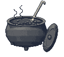

FIVE ALARM
Firehouse Chili
THE OLD FIRE CHIEF'S RECIPE
Hot enough to call the trucks. Take a gallon home: it keeps in the freezer, if you can wait.
BOWLS / CHILI DOGS / CORNBREAD /
BY THE QUART OR THE GALLON / CATERING
OPEN 7 DAYS
IN BRANDENBURG
(502) 555-0114